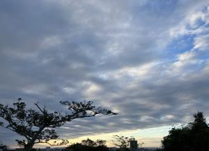
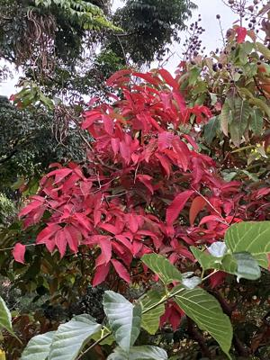

うるがいの話 ある日
最新: 今年の出来事【うるがいの話 ある日】とは 一日だけのプログです
『うるがいの話』の最新一日だけのプログで、通信料が少なく経済的だ。カニの画像をクリックすると全ての日付が載る『うるがいの話』サイトを表示します
|
|
【うるがいの話】 うるがい(ｳﾙｶﾞｲ urugai)とは、『もずくがに』の名前でとても大きくなります。 |
|---|---|
|
|
【カミマヤーの話】 猫のことを方言でマヤーといいます。カミマヤー（kamimayaa）とは、神の猫のことです。 |
|
【たながぁの音楽】 たながぁ（ﾀﾅｶﾞｰ tanagaa）とは手長えびのことで、何種類かあり大きいのは車 エビぐらいになります。 |

|
【ぶながぁの話】 ぶながぁ(ﾌﾞﾅｶﾞｰ bunagaa)とは、赤い髪の毛、赤い身体、そして身長は１ｍ２０ｃｍ ぐらい、川の蟹を食べているの目撃された。場所は沖縄県国頭郡大宜味村のと ある村僕の隣近所に住んでいる爺さんから、聞いた話です。 |
|
|
【ギーマの話】 ギーマ(giima)とは、山原の里山に咲くスズランに似た、 花を付けます。実は食べられます、 気が付くと口の周りが紫になっています。 |
2024年12月31日 (火）今年の出来事
16:18

一番は、ヨメのお義母さん介護を終えたこと。来年はそのあとの始末を
粛々と行うことになる。本当はたくさんあるのだが、面倒くさいので列
挙しない。
今年やり残したのに、一昨年（２０２３年）のカレンダーに書き込んだ
体重測定のメモを、エクセルに打ち込む作業が残っていた。朝から、打
ち込み作業を行う。除夜の鐘に前には終えたい。
その前に、諦めが悪い私は立ち上がらないＰＣ１号をウィンドウズ１０
の初期化をしてみたらどうなるのかと、ＢＩＯＳの起動をＤＶＤに設定
初期化ＤＶＤをいれ、起動する。なにか、修復作業をするという、一時
間もかかるかもしれないとメッセージがでている。ホー、それなら体重
の記録を打ち込むかと、３０分後にＰＣ１号をみると、ななんと無事起
動している。２０２４．０１月２４日の状態である。んー、良かった。
まだ、使えるぜ、と喜び押し入れにしまう。フムフム、いい年で締めく
れるゼ。
安定しているＰＣ２で、ギターを演奏している圧縮動画を、再生すると
『圧縮した動画ファイルコーディックが見つかりません』と言われる。
ホー、そうかい、だが、マイクロソフトが【ＨＥＶＣ ビデオ拡張機能
￥１２０】だせ！という、買いましたクレジットカードで。そして圧縮
動画はなんなく、動作した。ちなみそれは、美空ひばりの『みだれ髪』
のカラオケのユーチューブ動画で、ギターをコード弾で演奏しました。
オヤジだな、ジョギングコースに赤く紅葉した木があった。沖縄は秋で
ある。
